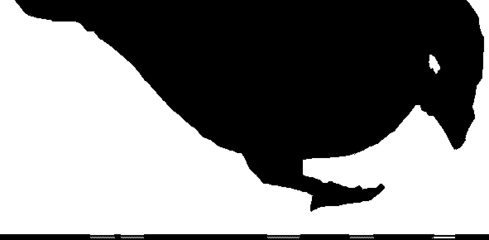
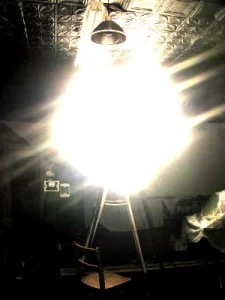

- A random picture I encountered while browsing online. And the longer I stared at it the brighter the light becomes.
- A piece of news I read during the Chinese New Year. The popular chinese maker 手工耿 made a laser artwork to celebrate the New Year.
And later that month I found the picture above while surfing the Internet, in which the girl was doing a quite similar performance as 手工耿 did in his video.
Then I start to ask myself: Who is more impressive?
-
Imagine: Butter as lampshade.